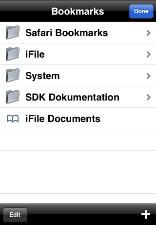

-
Navigatorul de fișiere
Navigatorul de fișiere permite navigarea prin ierarhia de directoare al iPhone-ului sau iPod Touch-ului. Toate tipurile de fișierele suportate au o iconiță cu simbolul colorat. Pentru a naviga sus în ierarhie utilizează butonul stâng situat în bara de meniu. Pentru a înainta în ierarhia de directoare selectează un director. Dacă selectezi un fișier, programul asociat îl va arăta sau va rula acel fișier (video și sunet). Dacă nici un program nu este asociat acelui fișier, iFile va arăta o listă de aplicați sau vizualizatori, pentru a alege acea aplicație cu care dorești să îl folosești. Pentru a te întoarce la directorul Acasă al utilizatorului mobile trebuie să folosești butonul
 .
Navigatorul de fișiere permite căutarea după nume de fișiere bazat pe un model de căutare introdus de tine.
Această funcționalitate de căutare este posibilă în mod normal cât și în cel de editare.
În plus, puteți sorta și grupa fișierele în funcție de nume, extensie, dată sau mărime.
.
Navigatorul de fișiere permite căutarea după nume de fișiere bazat pe un model de căutare introdus de tine.
Această funcționalitate de căutare este posibilă în mod normal cât și în cel de editare.
În plus, puteți sorta și grupa fișierele în funcție de nume, extensie, dată sau mărime.Preferințe
Apăsând butonul
 poți modifica preferințele:
poți modifica preferințele:- Stabilit la ieșire: Dacă e pornit, iFile va reține directorul de start când va fi oprit. Dacă e oprit, tu poți seta directorul de start cu care iFile va porni.
- Fișiere ascunse: Când e oprit, fișierele ascunse (cele care încep cu un punct) nu vor fi afișate de iFile. Când e pornit atunci toate fișierele și directoarele ascunse vor fi afișate.
- Folosește Coș de Gunoi: Cu această opțiune utilizatorul poate să decidă dacă fișierele care se șterg sunt mutate în coșul de gunoi iFile în /var/mobile/Library/iFile/Trash sau ele sunt șterse complect din fișierele de sistem.
- Numele Aplicaților: Când această optiune este pornită atunci iFile va arăta numele aplicaților din directorul /var/mobile/Applications înloc de numele criptic care îl au normal.
- Titlul Cântecelor: Când e pornită, fișierele audio (mp3 and m4v) vor avea titlul cântecului în loc de numele fișierului.
- Miniaturi: Pornită, o imagine mică va fi afișată pentru toate imaginile mai mici de 1MB înloc de iconița corespunzătoare.
- Grupare: Cu această opțiune pornită iFile va grupa fișierele folosind secțiunea de anteturi în funcție de setările din Criteriile de Sortare.
- Criteriile de Sortare: Alegând Criterii de Sortare tu poți să selectezi
după ce criteriu iFile va sorta conținutul directoarelor:
- Sortare după Nume
- Sortare după Extensie
- Sortare după Mărime
- Sortare după Dată
- Ordinea de Sortare: Folosind această opțiune poți să decizi dacă fișierele sunt arătate ascendent sau descendent.
- Numele Temelor: Selectând acest câmp vei primi o lista cu toate temele grafice disponibile inclusiv iconițele fisierelor și definiția mime-type.
- Formatul de căutare: Selectând formatul de căutare poți să
selectezi cum căutarea de fșiere va interpreta căutarea de text:
- Simplu: Funcționalitatea de căutare se uită dupa numele fișierelor care conțin textul căutat, ex. "test".
- Wildcard: Textul căutat poate să conțină caractere wildcard, ex. * și ?. Textul introdus care include wildcards trebuie să se potrivească cu numele întreg al fișierului, ex. "*test*".
- Expresie Regulară: Textul căutat este intrerpretat ca și o expresie regulară și trebuie să se potrivească cu numele întreg al fișierului, ex. ".*test.*".
- Lățimea Tabului: Câmpul lățimea tabului setează cum Vizualizatorul de Text va extinde spațiile taburilor și vice versa atunci când citești și scrii un fișier.
- Mărimea Fontului: Câmpul mărimea fontului îți permite să specifici mărimea fontului care să fie folosit de vizualizatorul de text.
- Numărul Portului: Câmpul numărul portului te lasă să specifici portul care va fi folosit de Severul Web.
- Autentificare: Utilizatorul poate să aleagă nume de utilizator/parolă pentu a primi acces la Serverul Web iFile.
- Nume de utilizator: Introduce numele de utilizator care vă fi utilizată pentru autentificare (cel implicit este 'guest').
- Parola: Introduce parola care vă fi utilizată pentru autentificare (cea implicită este 'guest').
- Statusul înregistrări iFile: Selectând acest câmp te va duce la setările și statusul înregistrări iFile. Este descris procesul de înregistrare, permite cumpărarea unei licențe - folosind Magazinul Cydia - permite introducerea unei adrese email folosită pentru înregistrare și iți arată statusul înregistrari. Îndată ce adresa email de înregistrare a fost introdusă, iFile va încerca să înregistreze dispozitivul la iphone.heinelt.eu data viitoare cand vei porni iFile. Este posibil să înregistrezi până la trei dispozitive cu adresă email de înregistrare.
Modul de Editare
După apăsarea butonului
 vei intra în modul de editare. Aici
poți selecta mai multe fișiere sau directoare ca și în applicația Apple Mail.
Apăsând de două ori selectează/deselectează toate fișierele dintr-un director.
Dacă folosești fucționalitatea de căutare în acest mod, poți să folosești toate
funcționalitătile de editare pe rezultatele de căutare
cum sunt descrise mai jos.
vei intra în modul de editare. Aici
poți selecta mai multe fișiere sau directoare ca și în applicația Apple Mail.
Apăsând de două ori selectează/deselectează toate fișierele dintr-un director.
Dacă folosești fucționalitatea de căutare în acest mod, poți să folosești toate
funcționalitătile de editare pe rezultatele de căutare
cum sunt descrise mai jos.
Crează
Apăsând butonul
 poți crea fișiere, directoare și link-uri simbolice. Formularul
iți permite să setezi nume, tip, proprietate și drepturile de acces.
poți crea fișiere, directoare și link-uri simbolice. Formularul
iți permite să setezi nume, tip, proprietate și drepturile de acces.Șterge
Apăsând butonul
 poți să ștergi fișierele, directoarele selectate, du-te la coșul de gunoi iFile
sau golește coșul de gunoi iFile din /var/mobile/Library/iFile/Trash. După confirmare
fișierele selectate vor fi șterse sau mutate în coșul de gunoi iFile în funcție de
setările din Preferințe. Fișierele mutate în coșul de gunoi vor fi mutate tot cu
calea lor complectă. În acest mod un utilizator poate să identifice usor de unde
a venit fișierul șters.
poți să ștergi fișierele, directoarele selectate, du-te la coșul de gunoi iFile
sau golește coșul de gunoi iFile din /var/mobile/Library/iFile/Trash. După confirmare
fișierele selectate vor fi șterse sau mutate în coșul de gunoi iFile în funcție de
setările din Preferințe. Fișierele mutate în coșul de gunoi vor fi mutate tot cu
calea lor complectă. În acest mod un utilizator poate să identifice usor de unde
a venit fișierul șters.
Copiază, Taie, Lipi, Legătura
Dacă dorești sa copiezi, legătură sau tai (muți) fișiere sau directoare, trebuie să selectezi unu sau mai multe fișiere sau directoare și apasă pe butonul
 .
.După ce ieși din modul editare, navighezi la directorul unde vrei să copiezi sau să muți fișierul selectat, intri în modul editare prin
și apăsând din nou butonul
.Notă funcționalitatea de copiere folosește clipboard-ul global al iPhone-uli. Deci, numele fișierelor copiate pot fi lipite și în alte aplicați.
ZIP
Când vrei să adaugi fișiere sau directoare selectate într-un fișier ZIP, apăsând butonul
 ,
introdu un nume pentru fișierul (fără extensia .zip) și apoi
apeși Crează. Implicit numele fișierului al primului obiect selectat
este prezentat în forma de mai jos.
,
introdu un nume pentru fișierul (fără extensia .zip) și apoi
apeși Crează. Implicit numele fișierului al primului obiect selectat
este prezentat în forma de mai jos.
Email
Pentru a adăuga fișierele selectate ca și elemente atașate într-un email, apasă pe butonul
 .
Apple MobileMail va apărea cu fișierele selectate deja atașate.
Tu trebuie doar să selectezi destinatarul și să apeși Trimite.
.
Apple MobileMail va apărea cu fișierele selectate deja atașate.
Tu trebuie doar să selectezi destinatarul și să apeși Trimite.
Transfer Bluetooth
Ca să transferi fișierele selectate la iFile pe un alt iPhone sau iPod Touch, apasă butonul
 .
Vei putea alege acel dispozitiv la care tu vrei să transferi fișierele.
Ca rezultat iFile de pe celalalt dispozitiv va întreba utilizatorul pentru
permisiunea de a primi fișierele. După transfer vei găsi fișierele în
/var/mobile/Documents. Puteţi trimite, de asemenea, un singur fişier, prin intermediul
iBlueNova.
.
Vei putea alege acel dispozitiv la care tu vrei să transferi fișierele.
Ca rezultat iFile de pe celalalt dispozitiv va întreba utilizatorul pentru
permisiunea de a primi fișierele. După transfer vei găsi fișierele în
/var/mobile/Documents. Puteţi trimite, de asemenea, un singur fişier, prin intermediul
iBlueNova.Atributele Fișierelor
Dacă dorești să schimbi numele unul fișier sau a unui director sau atributele sale, apăsând butonul
 .
.
Pentru directoare ai opțiunea să schimbi permisiunile și proprietarul:- Aceasta aplică utilizator și grup la toate directoarele și fișierele din ierarhie.
- Pentru permisiunile subdirectoarelor vor fi setate identic cu cele din directoarele de la nivelul superior.
- Permisiunile fișierelor sunt setate numai cu respect la citire și sciere cum au fost setate la directoarele de la nivelul superior. Dacă un fișier a fost executabil, el va rămâne executabil. Biți lipicioși sunt setați ca directoare de nivele superiore.
În cazul imaginilor sau videourilor (începând cu iOS 3.1) vei vedea un buton care iți va permite să adaugi imaginea sau video-ul în Rola film al iPhone sau iPod Touch. În acest fel aceste fișiere vor fii sincronizate cu iTunes și videourile editate.
Dacă alegi "Deschide cu...", iFile îti va lista toate vizualizatoarele disponibile. Când vei selecta un vizualizator, fișierul curent va fi deschis cu vizualizatorul ales.
Semne de carte
Apasând butonul
 poți accesa funcționalitatea de semne de carte iFile:
poți accesa funcționalitatea de semne de carte iFile:- Deschide iFile și semnele de carte Safari.
- Modifică Semnele de carte iFile.
- Adaugă Semnele de carte iFile.
- Adaugă directoare cu semne de carte iFile.
 Editează Semnele de Carte
Apasă butonul
pentru
a edita semnele de carte, ex. mișcă, schimbă sau ștergele.Adaugă Semne de carte iFile
Apăsând butonul
poți adăuga semne de carte.Manual
Pentru a ajunge la manual applicației iFile apasă butonul
 .
.